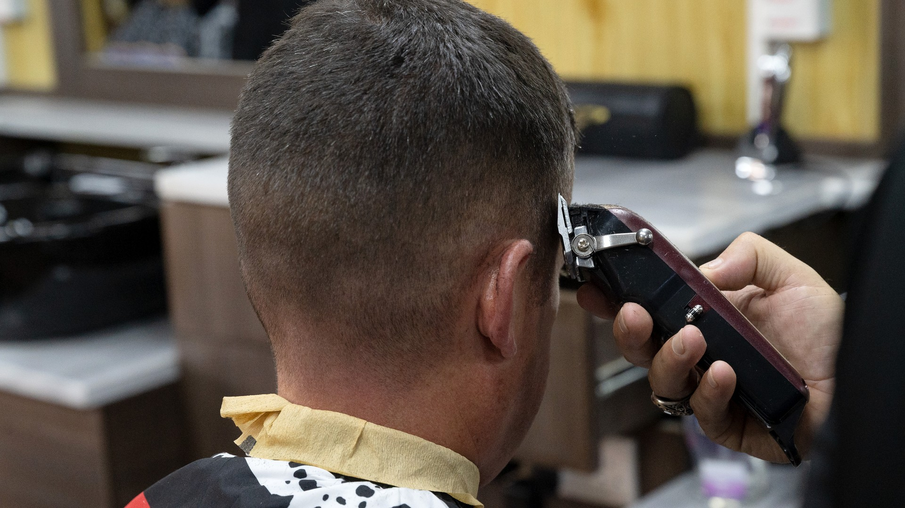
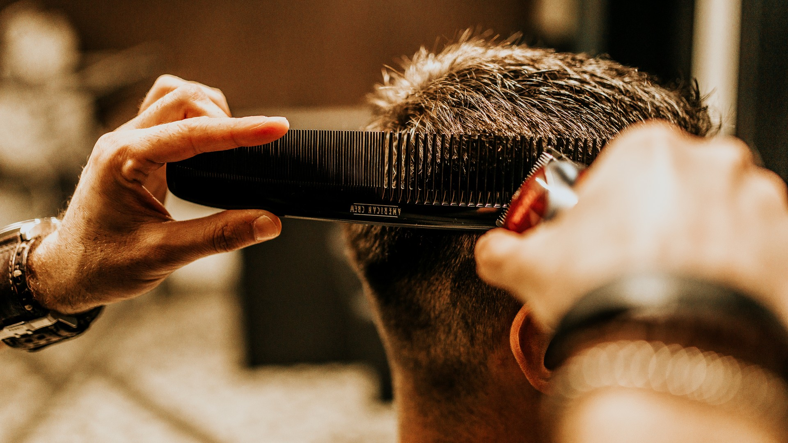
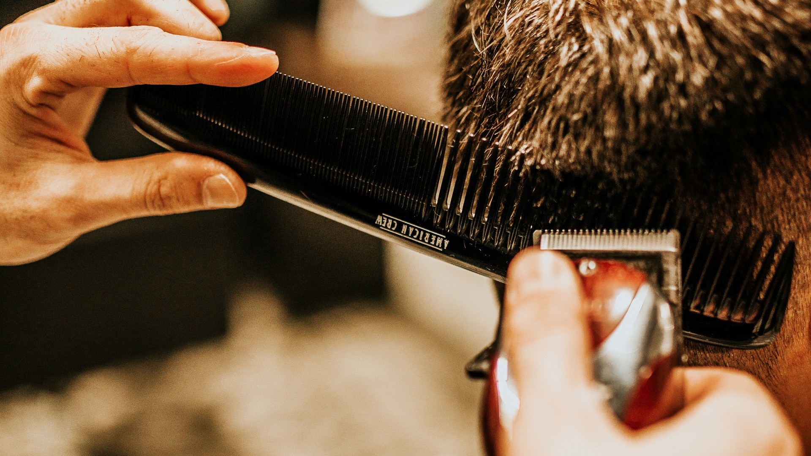
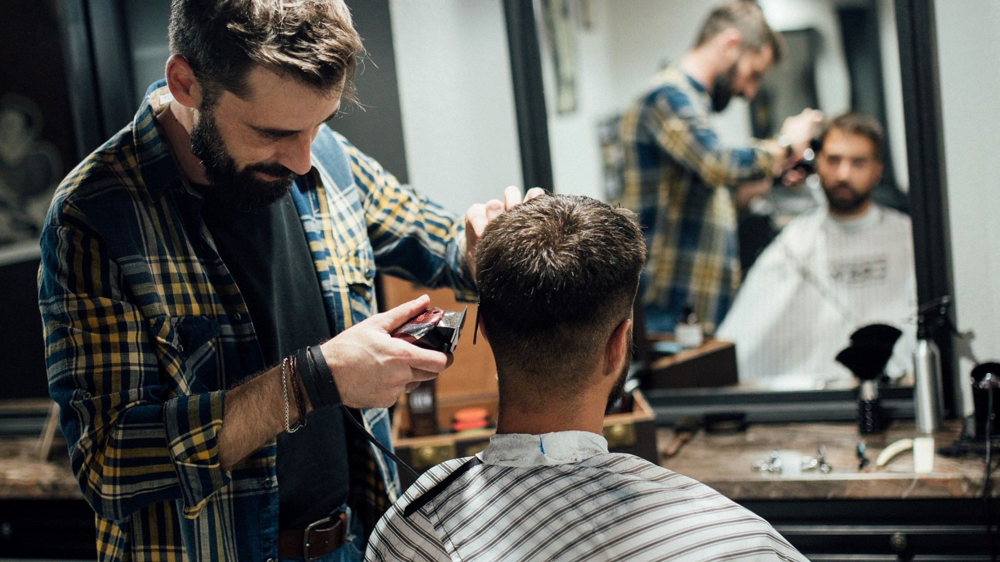
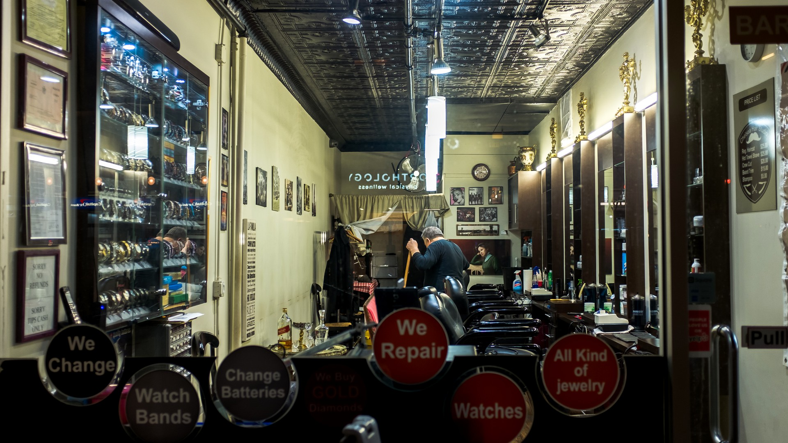

Customer
Useful before arrival
- Service estimate before submitting
- Barber preference captured
- Copyable appointment receipt
SignInPro-powered barber intake
Booking and queue requests mirror into the Fade Masters SignInPro workspace so the shop has a real check-in lane behind the public app.
Phoenix barbershop booking lane
Choose services, pick a preferred time, add notes, and send the request to the shop queue. You get a receipt immediately; final chair time is confirmed by the operator.
Fade and service visual library
The reel above is made from barber-chair, clipper, fade, beard-shave, mirror, and storefront cuts from the supplied image pack. Attributions stay bundled and visible.





NorthStar / SignInPro runtime
The public booking and queue forms load the NorthStar core, create SignInPro-compatible guest records, and write the Fade Masters workspace state that the operator opens from the NorthStar app.
Service menu
Customer
Shop
Confirmation